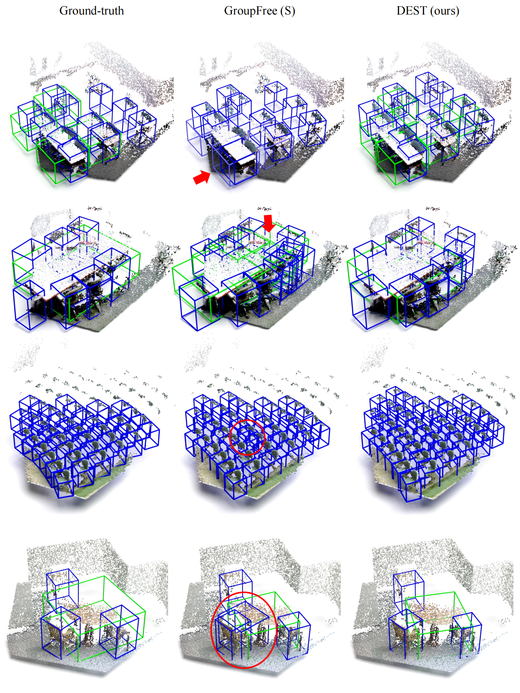

ICLR 2025
State Space Model Meets Transformer: A New Paradigm for 3D Object Detection
Chuxin Wang1,2
Wenfei Yang1
Xiang Liu4
Tianzhu Zhang1,2,3
1University of Science and Technology of China
2National Key Laboratory of Deep Space Exploration, Deep Space Exploration Laboratory
3Hainan Aerospace Technology Innovation Center
4Dongguan University of Technology
[Paper]
[Code]
[Website]
[Poster]
[BibTeX]
Abstract
DETR-based methods, which use multi-layer transformer decoders to refine object queries iteratively, have shown promising performance in 3D indoor object detection. However, the scene point features in the transformer decoder remain fixed, leading to minimal contributions from later decoder layers, thereby limiting performance improvement. Recently, State Space Models (SSM) have shown efficient context modeling ability with linear complexity through iterative interactions between system states and inputs. Inspired by SSMs, we propose a new 3D object DEtection paradigm with an interactive STate space model (DEST). In the interactive SSM, we design a novel state-dependent SSM parameterization method that enables system states to effectively serve as queries in 3D indoor detection tasks. In addition, we introduce four key designs tailored to the characteristics of point cloud and SSM: The serialization and bidirectional scanning strategies enable bidirectional feature interaction among scene points within the SSM. The inter-state attention mechanism models the relationships between state points, while the gated feed-forward network enhances inter-channel correlations.
To the best of our knowledge, this is the first method to model queries as system states and scene points as system inputs, which can simultaneously update scene point features and query features with linear complexity. Extensive experiments on two challenging datasets demonstrate the effectiveness of our DEST-based method. Our method improves the GroupFree baseline in terms of AP50 on ScanNet V2 (+5.3) and SUN RGB-D (+3.2) datasets. Based on the VDETR baseline, Our method sets a new SOTA on the ScanNetV2 and SUN RGB-D datasets.
Nesie
Overview
The overall framework of the DEST-based method for 3D object detection. We first utilize an encoder to extract 3D features, followed by a state sampling module to select state points, referred to as queries in DETR architecture. Subsequently, we input both the scene points and state points into the ISSM-based decoder for simultaneous updates. Finally, the updated state points are fed into a detection head to predict the 3D bounding boxes.
Interactive State Space Model

In the ISSM, we model the query points as the system states and the scene points as the system inputs. Unlike previous SSMs (Gu et al., 2021a; Gu & Dao, 2023; Dao & Gu, 2024), the proposed ISSM determines how to update the system states based on both the system states and system inputs. Specifically, we modify the SSM parameters (∆, B, C) to be dependent on the system states and design a spatial correlation module to model the relationship between state points and scene points. Therefore, the system states in the ISSM can effectively fulfill the role of queries in complex 3D indoor detection tasks.
ISSM-based Decoder Block
The ISSM-based decoder consists of four core components: a Hilbert-based point cloud serialization strategy, an inter-state attention module, an ISSM-based Bidirectional Scan (IBS) module, and a Gated Feed-Forward Network (GFFN). The proposed serialization strategy is designed to serialize the scene points based on the Hilbert curve (Hilbert & Hilbert, 1935), benefiting from its locality-preserving properties. The IBS module is designed to achieve bidirectional interaction among different scene points, while the inter-state attention module is designed to capture the relationships between state points. Lastly, the GFFN is designed to enhance inter-channel correlations through a gated linear unit. The ISSM-based decoder can replace the transformer decoder in DETR-based methods to address the performance limitations caused by
fixed scene point features.
Results

Conclusion
(1) We propose a novel SSM-based 3D object detection paradigm DEST to overcome the performance limitations caused by fixed scene point features during the query refinement process. To the best of our knowledge, this is the first method to model queries as system states within an SSM framework.
(2) We design a novel ISSM whose system states can effectively function as queries in complex 3D indoor detection tasks. In addition, we develop an ISSM-based decoder tailored to the characteristics of 3D point clouds, fully harnessing the potential of the ISSM for 3D object detection.
(3) Extensive experimental results demonstrate that the proposed SSM-based 3D object detection method consistently enhances the performance of baseline detectors on two challenging indoor datasets, i.e., ScanNet V2 (Dai et al., 2017) and SUN RGB-D (Song et al., 2015). Moreover, comprehensive ablation studies validate the effectiveness of each designed component.
Paper
Last update: March 17, 2025